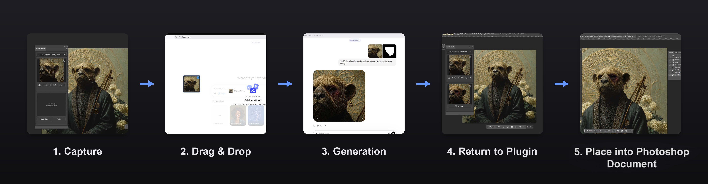
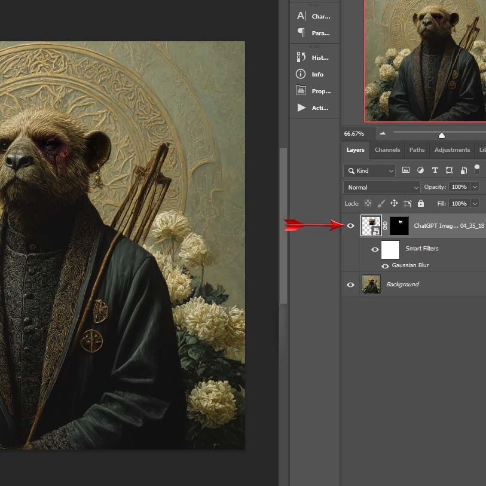
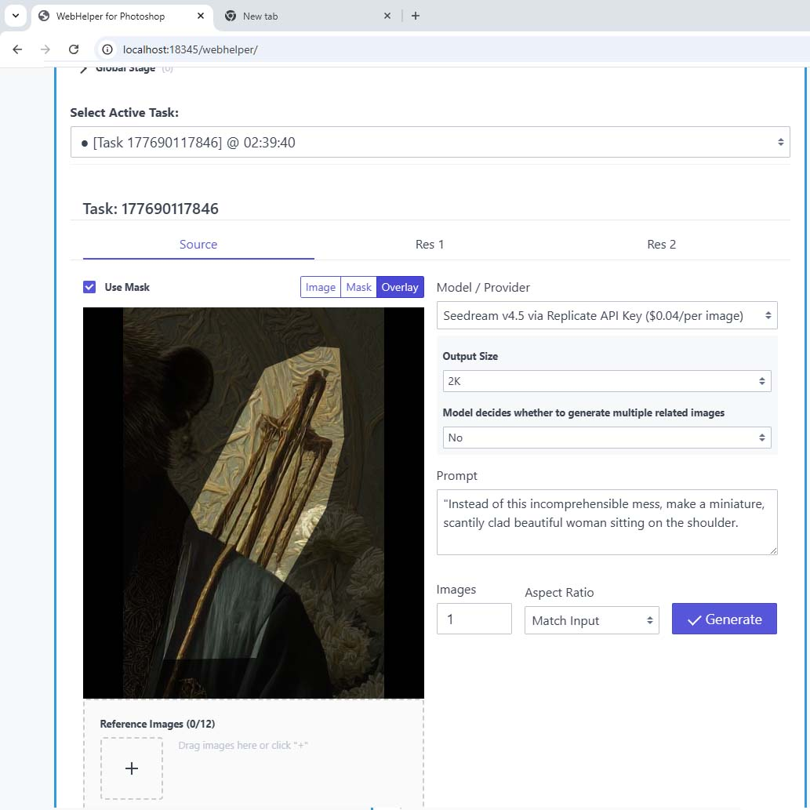

01
Capture
Select any area in Photoshop with any tool. Click Capture. The plugin pulls the image content, a pixel-perfect mask, and smart aspect-ratio fitting for AI tools.
FromPS / ToPS is a workflow bridge. Capture a selection with its exact mask, send it to ChatGPT, Midjourney, Gemini, or your own API — then place the result back, aligned, masked, and non-destructive.
Photoshop 2024+ · Free to use · No feature paywall · View on GitHub
The pain
How it works
Not another AI model — just a bridge for the tools you already use.
Select any area in Photoshop with any tool. Click Capture. The plugin pulls the image content, a pixel-perfect mask, and smart aspect-ratio fitting for AI tools.
Drag image + mask into ChatGPT, Midjourney, Gemini, or any editor — or use the built-in WebHelper with your own API keys (Fal, Replicate, BFL, xAI, and more).
Paste or load the result, hit Place Back. It lands at the original coordinates as a Smart Object with a layer mask — seamless, undoable, non-destructive.



Why it exists
Any Photoshop selection tool becomes an exact inpaint mask — no redrawing in the browser.
Results return to the original coordinates with Smart Object + layer mask and soft edge blend.
Browser drag-and-drop or your own APIs. Choose the model that fits the project.
Local API command center: multi-task jobs, mask overlay, regenerate, chain results, keep keys on your machine.
The app is free to use. No features are locked behind payment. Optional supporter key only silences reminders.
PhotoshopHelper lives on your machine for clipboard, drag-and-drop, and localhost API workflows.


Standard installer. Automatic updates included.
Download .exe · 1.0.5Because this is a source-available project without a paid code-signing certificate, Windows may show “Windows protected your PC”. That is expected.
Provided as-is. Prefer the Apple Silicon DMG on M1/M2/M3/M4 Macs.
The macOS build is currently unsigned. Gatekeeper may say the app is damaged or from an unidentified developer.
xattr -cr /Applications/PhotoshopHelper.app
Browser drag-and-drop needs no API keys. WebHelper only needs a key for the provider you choose. PhotoshopHelper pairs itself with the plugin automatically — no token to copy by hand.
Who it’s for
FAQ
No. It is a bridge. It sends your Photoshop selections to the AI tool of your choice (browser-based or API) and brings the results back.
Only if you want WebHelper’s API features. The browser drag-and-drop workflow needs no API keys.
Browser drag-and-drop goes to whatever site you drop into. WebHelper sends from your machine to the API provider you configured. There are no middleman servers operated by FromPS / ToPS.
Yes. The app is free to use and the core workflow is not locked behind a payment. Heavy use may show a dismissible support reminder. A supporter key simply snoozes those reminders for a long time.
It is source-available for transparency and personal/non-commercial use under CC BY-NC-SA 4.0. That is not an OSI open-source license.
FromPS / ToPS does not claim rights over your outputs. Rights depend on your input material and the terms of the AI tool or API you used. The NonCommercial license restricts commercial redistribution of the software itself, not your image files.
Adobe Photoshop 2024 (v24.0.0+) and either Windows 10/11 x64 or the experimental macOS build. You also need internet access for the AI services you choose.
No. PhotoshopHelper generates a token on first run and delivers it straight into the plugin automatically. If the panel ever says the Helper isn’t paired, reopening it is usually enough — a manual fallback lives in the plugin’s Settings dialog.
Support the project
If FromPS / ToPS saves you time, you can grab a supporter key on Gumroad. No features are locked — the key only quiets support reminders.